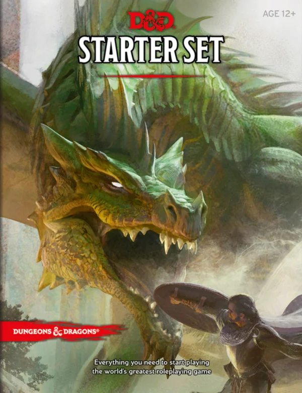

Здесь собран достаточно большой список разнообразных книг по D&D 5e. Они все были разделены на 4 категории.
Sourcebooks – Книги правил, справочники, бестиарии, дополнения.
Guids – Путеводители по сеттингам и приключениям.
Adventures – Большие и малые приключения от Adventures League.
Other – Неофициальный книги и материалы от сторонних компаний, таких как Kobold Press.
Sourcebooks

Набор: Starter Set
Дата Выхода: 15 Июля 2014
Книги в наборе: Basic Rules – упрощенные правила.
Lost Mine of Phandelver – стартовое приключение.
В ноябре 2018 года вышла обновленная версия базовых правил в виде PDF файла.